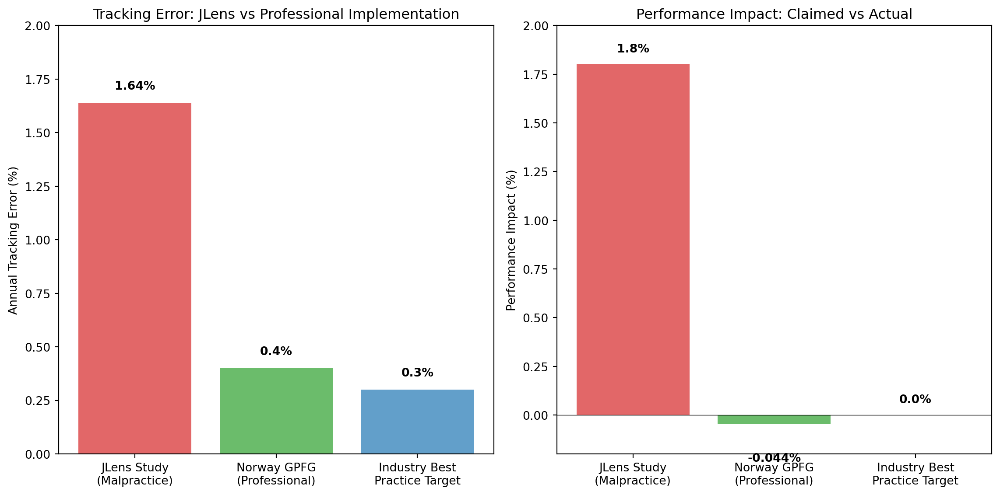
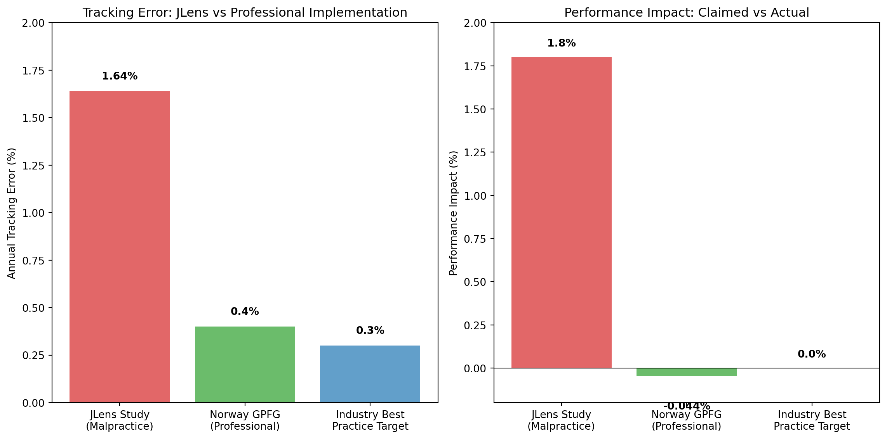
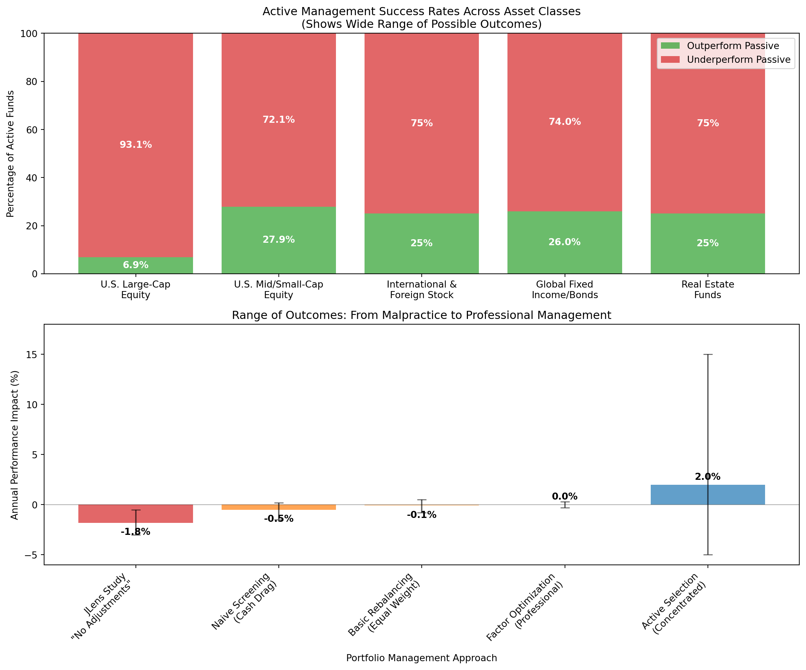

Stockpicking is Still Legal
Will BDS-related divestment materially harm endowment returns?
[todo:verify] total companies on underlying lists N were small or private, 38 company sample represented 32% of the S&P 500
[maybe it’s a timeline of when they were formed]

Key Insight: Jlens’ benchmark (Vettafi 500) had annual tracking error vs the S&P 500 that explains 91% of their claimed underperformance.
JLens won’t disclose:
Non-replicable results are invalid in both academic and investment contexts.
It’s OK To Criticize Active Management

The Point: Professional portfolio management offers a wide spectrum of outcomes. Even if JLens tested a credible approach (they didn’t), it would only show one data point on a vast spectrum of possibilities.
Key Point: Even if JLens’s approach were credible for index strategy, it wouldn’t prove BDS is good or bad for portfolio returns. There are many ways to manage a portfolio professionally.
Professionally managed exclusions track benchmarks within basis points, not percentage points.
| Institution | Scope | Return Impact | Risk Controls |
|---|---|---|---|
| NBIM (Norway) | 180+ exclusions | +0.44% cumulative contribution | Tracking error 0.3–0.5% |
| UC Regents | Fossil fuel divestment | CIO: “financial risk management” | Consultant oversight + phased exit |
| PFZW / KLP | Settlement exclusions | Neutral-to-positive impact | Vendor optimization + quarterly reviews |
Future analysis of divestment impacts should include:
Use the Norway Model framework to implement exclusions professionally:
Any trustee considering the JLens study should demand complete methodology disclosure and comparison with actual institutional implementations.
This analysis is provided to support evidence-based policy discussion. We welcome transparency from any party to enable replication and verification.